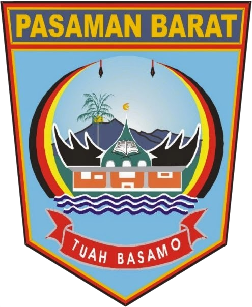

Pasaman Barat
Penjelasan Pasaman Barat :
Kabupaten Pasaman Barat adalah salah satu kabupaten yang berada di provinsi Sumatra Barat, Indonesia. Daerah ini dibentuk dari hasil pemekaran Kabupaten Pasaman berdasarkan UU No.38 Tahun 2003 tanggal 18 Desember 2003, dengan ibu kota kabupaten di Simpang Ampek. Potensi terbesar Pasaman Barat terletak pada sektor perkebunan kelapa sawit, jeruk, salak, karet, kopi dan cocoa.
